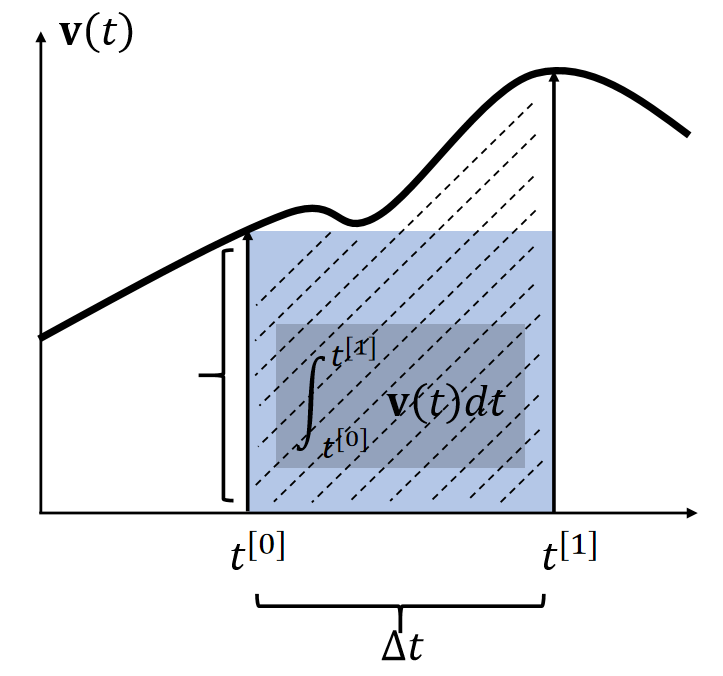
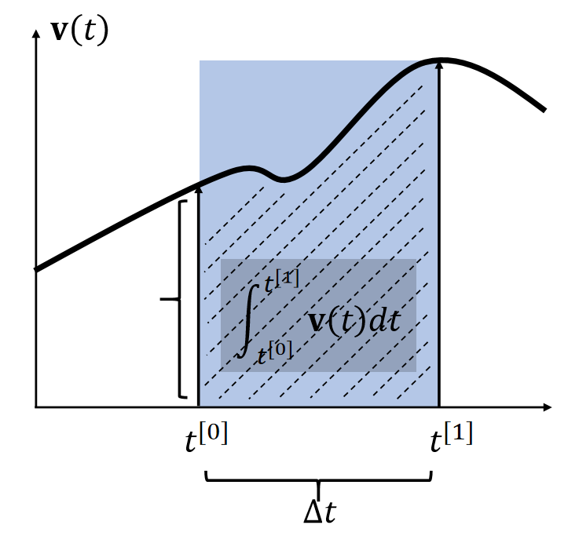
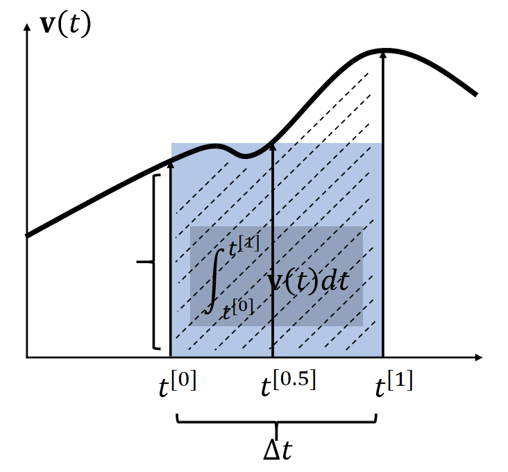
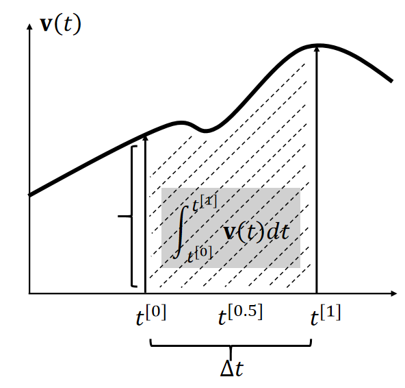
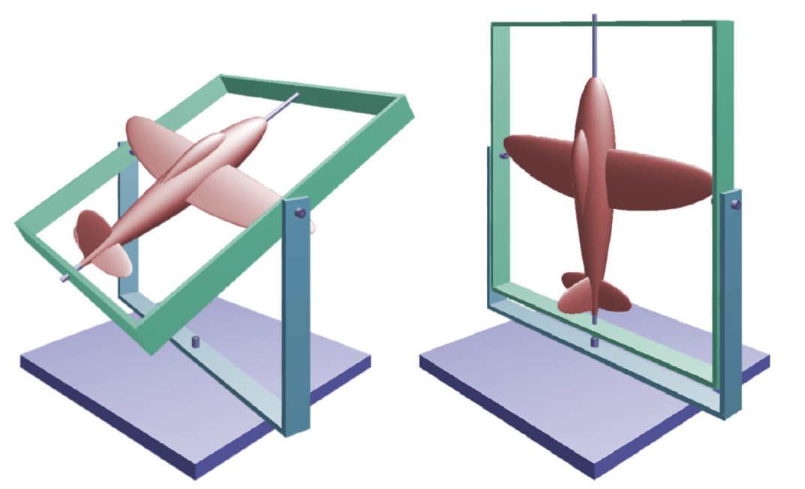
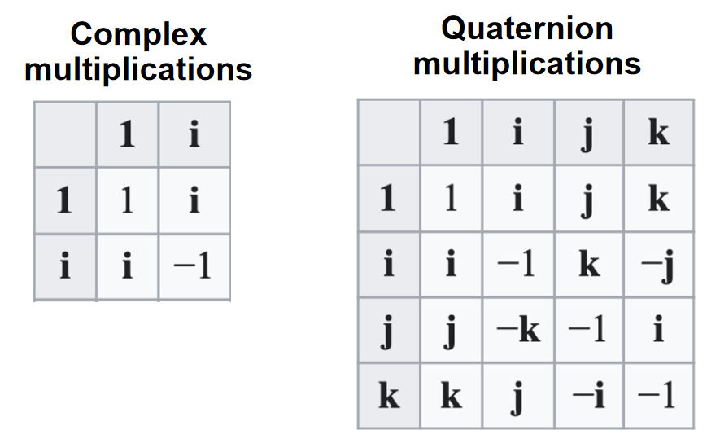

P11
补充1：Integration Methods Explained
Explicit Euler
By definition, the integral \(\mathbf{x} (t) = \int \mathbf{v} (t) dt\) is the area. Many methods estimate the area as a box.

✅ 假设\(\mathbf{x} \)和\(\mathbf{v} \)都是一维的。速度的积分就是阴影区域的面积。

✅ 近似到一阶项，因此称为一阶方法。漏掉的高阶项就是误差。
P12
Implicit Euler


✅ 使用 \(t_0\) 时刻的速度：显式积分
使用 \(t_1\) 时刻的速度：隐式积分
两种方法都只能一阶近似
P13
Mid-Point


P14
比较与混合
By definition, the integral \(\mathbf{x} (t)=∫\mathbf{v} (t) dt\) is the area. Many methods estimate the area as a box.
| Explicit Euler (1st-order accurate) sets the height at \(t^{[0]}\). \(\int_{t^{[0]}}^{t^{[1]}} \mathbf{v} (t)dt≈∆t \mathbf{v} (t^{[0]})\) |
|---|
\(\quad\)
| Implicit Euler (1st-order accurate) sets the height at \(t^{[0]}\). \(\int_{t^{[0]}}^{t^{[1]}} \mathbf{v} (t)dt≈∆t \mathbf{v} (t^{[1]})\) |
|---|
\(\quad\)
| Mid-point (2nd-order accurate) sets the height at \(t^{[0]}\). \(\int_{t^{[0]}}^{t^{[1]}} \mathbf{v} (t)dt≈∆t \mathbf{v} (t^{[0.5]})\) |
|---|

P15
$$ \begin{cases} \mathbf{v} (t^{[1]})=\mathbf{v} (t^{[0]})+\mathbf{M} ^{−1}\int_{t^{[0]}}^{t^{[1]}} \mathbf{f} (\mathbf{x} (t), \mathbf{v} (t), t)dt\\ \mathbf{x} (t^{[1]})=\mathbf{x} (t^{[0]})+\int_{t^{[0]}}^{t^{[1]}} \mathbf{v} (t)dt \end{cases} $$
✅ 在当前应用场景中，使用前面方法的混合
P16
Leapfrog Integration

✅ 速度和位置是错开的。上下两种写法，在计算上是一样的。
In some literature, such a approach is called semi-implicit.
It has a funnier name: the leapfrog method.

P20
补充2：Rotation Representation
Rotation Represented by Matrix
-
The matrix representation is widely used for rotational motion.
-
It’s friendly for applying rotation to each vertex (by matrix-vector multiplication).
-
But it is not suitable for dynamics:
- It has too much redundancy: 9 elements but only 3 DoFs.
- It is non-intuitive.
- Defining its time derivative (rotational velocity) is also difficult.
P21
Rotation Represented by Euler Angles
-
The Euler Angles representation is also popular, often in design and control.
-
It is intuitive. It uses three axial rotations to represent one general rotation. Each axial rotation uses an angle.
-
In Unity, the order is rotation-by-Z, rotation-by-X, then rotation-by-Y.
-
But it is not suitable for dynamics either:
- It can lose DoFs in certain statuses: gimbal lock.
- Defining its time derivative (rotational velocity) is difficult.
P22
Gimbal Lock
The alignment of two or more axes results in a loss of rotational DoFs.

✅ 在某些特定的情况下，自由度降低了
P23
Rotation Represented by Quaternion
Introduction

In the complex system, two numbers represent a 2D point.
What about a “complex” system for 3D point? Quaternion! Four numbers represent a 3D point (with multiplication and division).
P24
Quaternion Arithematic
Let \(\mathbf{q} = \begin{bmatrix} \mathbf{s} &\mathbf{v} \end{bmatrix} \) be a quaternion made of two parts: a scalar part \(s\) and a 3D vector part \(\mathbf{v}\), accounting for \(\mathbf{ijk}\).
✅ 在有些库里面写作： \(q = \begin{bmatrix} w & x & y &z \end{bmatrix}\)，w为实数部分
\(a\mathbf{q} =\begin{bmatrix} as &a\mathbf{v} \end{bmatrix}\quad\) Scalar-quaternion Multiplication
\(\mathbf{q} _1±\mathbf{q} _2 =\begin{bmatrix} \mathbf{s}_1±\mathbf{s}_2 & \mathbf{v} _1 ± \mathbf{v} _2 \end{bmatrix}\quad\quad\) Addition/Subtraction
\(\mathbf{q} _1×\mathbf{q} _2= \begin{bmatrix} \mathbf{s} _1\mathbf{s} _2−\mathbf{v} _1\cdot \mathbf{v} _2 & \mathbf{s} _1\mathbf{v} _2+\mathbf{s} _2\mathbf{v} _1+\mathbf{v} _1×\mathbf{v} _2 \end{bmatrix}\quad\quad\) Multiplication
\(||\mathbf{q} ||=\sqrt{\mathbf{s^2+v\cdot v} } \quad\quad\)Magnitude
\(\quad\)
P25
Rotation Represented by Quaternion
-
To represent a rotation around \(\mathbf{v}\) by angle \(0\), we set the quaternion as:

-
lt's very intuitive. lt's the built-in representation in Unity.
-
Convertible to the matrix:
$$
\mathbf{R}=\begin{bmatrix}
s^2+x^2-y^2-z^2 & 2(xy-sz) & 2(xz+sy)\\
2(xy+sz) & s^2-x^2+y^2-z^2 & 2(yz-sx) \\
2(xz-sy) & 2(yz+sx) & s^2-x^2-y^2+z^2
\end{bmatrix}
$$
本文出自CaterpillarStudyGroup，转载请注明出处。
https://caterpillarstudygroup.github.io/GAMES103_mdbook/